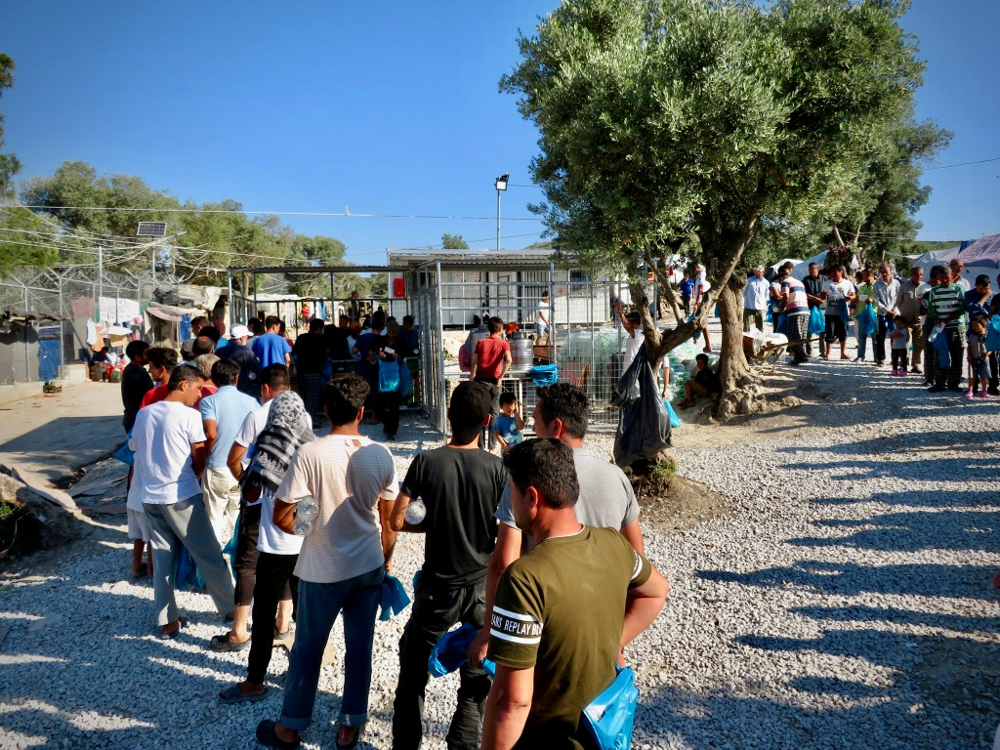
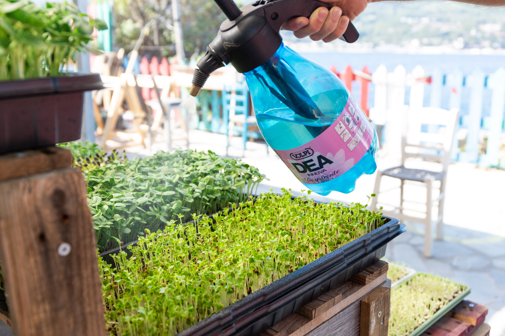
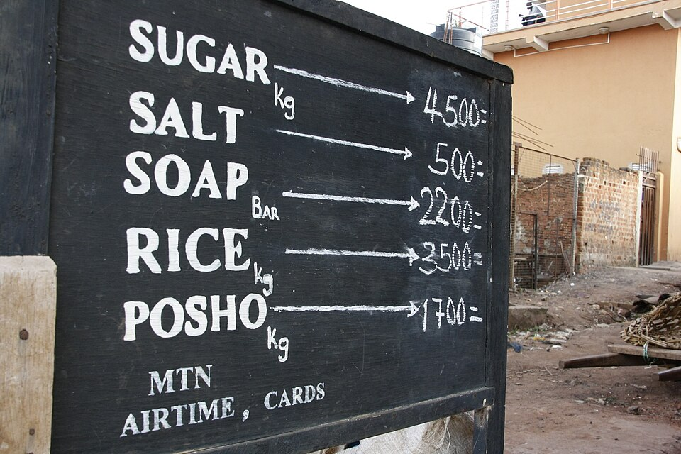

Refuge should mean safety, not more vulnerability.
From Seed to Shelter is an initiative tackling food and nutrition challenges facing displaced people.
We look for vulnerabilities overlooked by bigger organisations and work with communities to solve them.

What we do
We…
- identify gaps
-
research and
test solutions -
publish what we learn,
mistakes included
All of our work is in partnership with local organisations and the communities who know the issues best.
What we're working on
-

Microgreens farming, Greece
Refugees in Greece receive sufficient calories, but food provided is low quality and micronutrient poor. This leads to negative health impacts.
About the project → Microgreens farming, Greece Read the report → Microgreens farming, Greece
-

Food insecurity research, Uganda
Refugees who have newly arrived in Uganda face a reduction in rations provided before their first feasible harvest. This induces significant hunger, and in turn negative coping mechanisms.